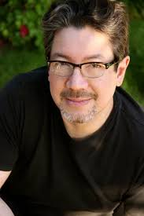

Santa Monica Studios
About Page
ABOUT US
Our Origins: Breaking the Corporate Mold
Santa Monica Studio was founded in 1999 by long-time Sony visionary Allan Becker. At the time, Becker sought to break away from the rigid, highly corporate structure of Sony Computer Entertainment's Foster City headquarters. He envisioned a decentralized, creative sanctuary in Southern California where developers could operate with the autonomy of an independent boutique, backed by the robust resources of PlayStation. Setting up our first workspace in a humble brick building in Santa Monica, California—literally right next door to our sister studio, Naughty Dog—we set out to prove that an environment built on creative freedom could yield unparalleled industry excellence. Driven by foundational pioneers like producer Shannon Studstill, our initial mission was to master the raw architectural capabilities of the upcoming PlayStation 2. We built a custom engine and delivered our first high-speed racing title, Kinetica, in 2001—proving we could ship innovative software on time and under budget

ALLAN BECKER(founder of Santa Monica Studio)
The Birth of a Legend & The Dual-Team Legacy
With the Kinetica engine as our bedrock, a passionate team led by game director David Jaffe set out to build an uncompromising action-adventure epic. In 2005, God of War was unleashed upon the world, permanently establishing our studio as a titan of visceral combat and mythic storytelling. As the tragic journey of Kratos evolved across the PlayStation 2 and PlayStation 3 eras, Allan Becker established a unique, dual-identity culture within our walls. While our internal teams pushed the boundaries of massive, triple-A commercial blockbusters, Becker fiercely believed that commercial success shouldn't come at the expense of artistic experimentation. To prevent creative stagnation, we formed our External Development group. Acting as a premier business incubator and mentor network, this specialized team welcomed young, boundary-pushing indie creators into our studio. By sharing our high-end engineering expertise and production pipelines, we proudly helped nurture definitive, poetic masterpieces like thatgamecompany’s Journey, Giant Sparrow's The Unfinished Swan, and many more